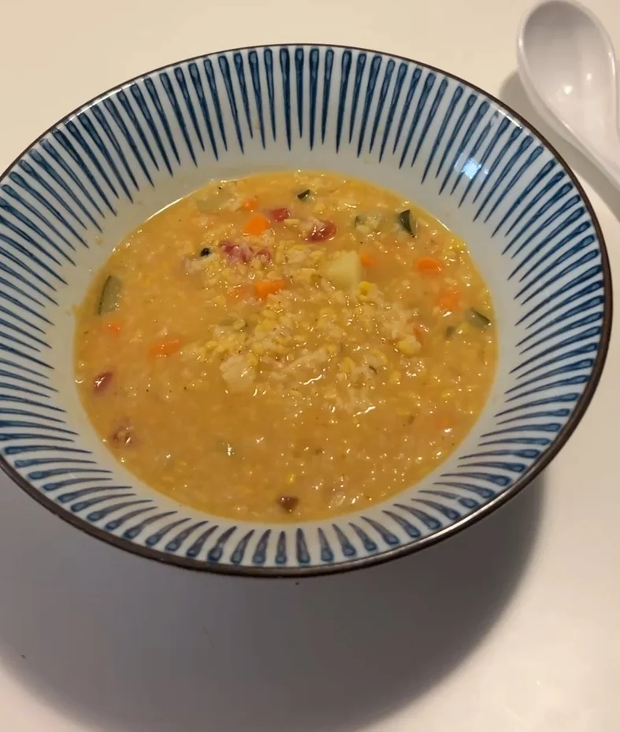
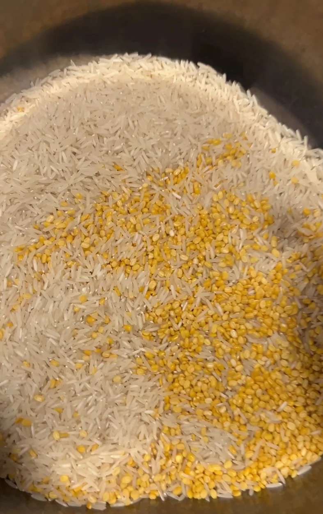
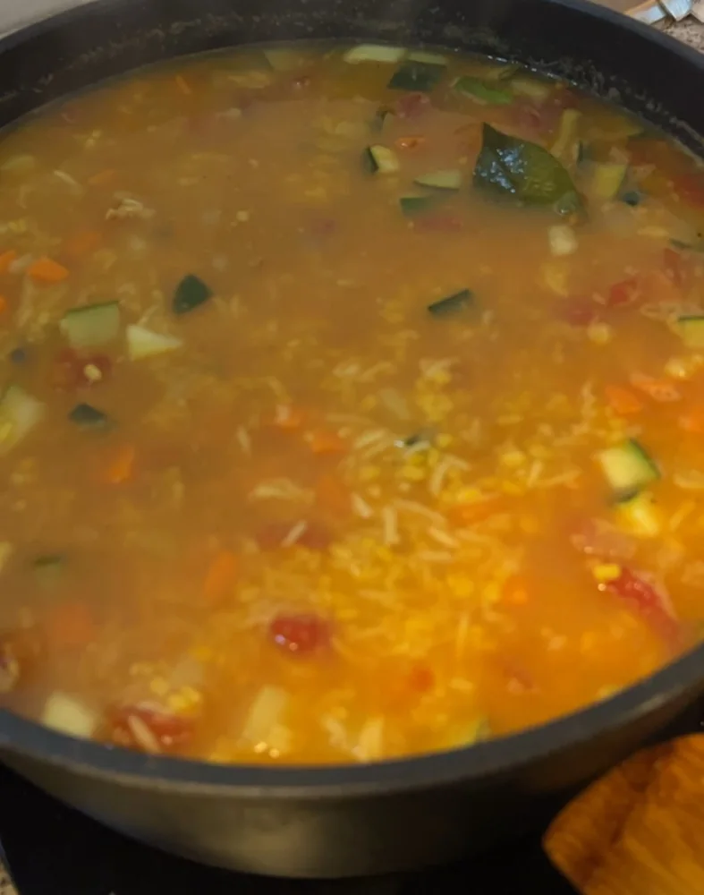

Kitchari ayurvédico: un cuenco para el cambio de estación

Hay momentos en los que siento que necesito hacer espacio. Bajar el ritmo, simplificar lo que como y escuchar un poco más lo que está pasando dentro de mí.
Ahora estoy preparando kitchari durante una semana entera, con la intención de depurar mi cuerpo y mi espíritu de cara al cambio de estación. Para mí, esa depuración tiene mucho que ver con soltar lo que pesa, descansar y volver a lo sencillo.
El kitchari es un plato de la cocina india muy presente en la tradición ayurvédica. Se prepara con arroz, mung dal y especias, y se cocina hasta que todo queda tierno, cálido y cremoso. Un cuenco de esos que apetece sostener entre las manos.
Esta semana quiero regalarme eso: comida sencilla, un poco de silencio y tiempo para volver a mí.
Lo que nos cuenta el ayurveda
En ayurveda, la digestión ocupa un lugar central. Se habla de agni, el fuego digestivo, para describir nuestra capacidad de transformar lo que comemos. El kitchari se utiliza tradicionalmente como una comida suave y reconfortante en periodos de cuidado y transición.
La cocción larga y la textura húmeda forman parte de esa manera de acompañar la digestión. El comino y el jengibre se emplean tradicionalmente con ese propósito. Las especias y su intensidad se ajustan a cada persona: lo que a una le sienta bien puede resultar demasiado intenso para otra.
También se considera una preparación adaptable a los tres doshas —vata, pitta y kapha—, ajustando las especias, las verduras y la cantidad de grasa a cada persona y a la estación. Me gusta esa invitación a observar qué necesito en cada momento.
Desde una mirada nutricional, el arroz aporta energía y el mung dal aporta proteína vegetal y fibra. Y hay algo muy cotidiano que también agradezco de esta receta: una sola olla, pocos ingredientes y menos decisiones.
Yo soy de sentir las especias
Me gusta que se sientan. Que al abrir la olla salga ese aroma que llena la cocina y te invita a acercarte.
En esta ocasión he usado jengibre y cúrcuma frescos, ajo, cebolla, patata, batata y calabacín. Y una mezcla de especias morunas que me trajeron de Melilla, de donde proceden mis ancestros Salama. Cocinar con ella es también una pequeña forma de acercarme a mis raíces.
Además, he añadido comino, canela, tres cardamomos, semillas de anís, tres pimientas de Sichuan y merkén ahumado de Chile. En esta olla se encuentran sabores de distintos lugares y un pedacito de mi historia.
Y al final le he añadido una lata de leche de coco. Me encanta la dulzura, el sabor y la grasa que aporta: todo queda más cremoso y las especias se envuelven en esa suavidad.
Esta es mi versión del kitchari, más especiada que la preparación ayurvédica suave. Puedes bajar la intensidad, especialmente el merkén, según lo que te apetezca y te siente bien.
Ingredientes para 3 o 4 raciones generosas
Tiempo aproximado: 15 minutos de preparación y 40–50 minutos de cocción. Las cantidades son orientativas para preparar esta versión; con las especias, empieza poco a poco y ajusta a tu gusto.
- 150 g de arroz basmati blanco
- 100 g de mung dal amarillo, partido y sin piel
- 1 o 2 cucharadas de ghee o de aceite de oliva
- 2 dientes de ajo y 1 cebolla pequeña
- 1 patata pequeña, 1 batata pequeña y 1 calabacín pequeño
- Un trocito de jengibre fresco de unos 2 cm, rallado
- Un trocito de cúrcuma fresca de 1–2 cm, rallada
- 1 cucharadita de mezcla de especias morunas de Melilla, o al gusto
- 1 cucharadita de comino en semillas
- 1 trocito de canela en rama
- 3 vainas de cardamomo, ligeramente abiertas
- ½ cucharadita de semillas de anís
- 3 granos de pimienta de Sichuan, ligeramente machacados
- Una pizca de merkén ahumado de Chile, o al gusto
- 1,5 litros de agua, más un poco de agua caliente si hace falta
- 1 lata de leche de coco, para añadir al final
- Sal al gusto, teniendo en cuenta que algunas mezclas de especias y el merkén ya llevan sal
El mung dal es judía mungo pelada y partida. Puedes encontrarlo en tiendas de alimentación india o ecológica. Si no lo consigues, puedes preparar una versión con lenteja roja pelada, revisando la cocción. La judía mungo verde entera necesita otra preparación y más tiempo.

Paso a paso
- Prepara los ingredientes. Lava el arroz y el mung dal por separado y escurre. Pica la cebolla y el ajo. Pela la patata y la batata, y córtalas en dados pequeños. Corta también el calabacín y ralla el jengibre y la cúrcuma frescos.
- Despierta las especias enteras. Calienta el ghee o el aceite en una olla amplia a fuego medio suave. Añade el comino, la canela, los tres cardamomos ligeramente abiertos, el anís y los tres granos de Sichuan machacados. Remueve unos 30 segundos, hasta que desprendan su aroma, sin dejar que se quemen.
- Haz una base con calma. Incorpora la cebolla y cocina durante 6–8 minutos, hasta que esté tierna. Añade el ajo, el jengibre y la cúrcuma frescos, y remueve un minuto más.
- Añade la mezcla de Melilla. Incorpora las especias morunas y una pizca de merkén ahumado. Remueve unos segundos; si se pega, añade un chorrito de agua. Las mezclas cambian mucho de una a otra, así que deja que el aroma te vaya guiando.
- Incorpora la patata, la batata, el arroz y el mung dal. Mezcla bien con la base especiada y añade el agua. Lleva a ebullición y después baja el fuego. Cocina con la tapa entreabierta durante unos 20 minutos, removiendo de vez en cuando.
- Añade el calabacín. Sigue cocinando unos 15–20 minutos más, hasta que el mung dal y el arroz estén muy blanditos y la patata y la batata estén tiernas. Si hace falta, prolonga unos minutos la cocción.
- Busca tu textura y tu punto de especias. Debe quedar cremoso y húmedo, como un guiso de cuchara. Añade agua caliente si se espesa demasiado y ajusta la sal. Si quieres más intensidad, añade un poco más de especias molidas o merkén y deja cocinar unos minutos para integrarlas.
- Termina con la leche de coco. Cuando el arroz, el mung dal y las verduras estén tiernos, añade una lata de leche de coco y remueve con suavidad. Deja que se integre y se caliente a fuego suave durante unos minutos. Aporta dulzura, sabor y grasa, y deja el kitchari todavía más cremoso. Prueba de nuevo y ajusta la sal y las especias si hace falta.
- Deja reposar y sirve. Apaga el fuego, espera cinco minutos y retira la canela y las vainas de cardamomo que encuentres. Sirve caliente, a una temperatura agradable para comer.
- Regálate ese momento. Busca un sitio tranquilo, deja el móvil a un lado y prueba la primera cucharada despacio. Siente el aroma, el calor y las especias. Escucha cómo te sienta.

Un pequeño ritual para cambiar de estación
Mientras se cocina, puedes abrir una ventana, ordenar un rincón o sentarte unos minutos a respirar. A veces, preparar la comida también nos da un espacio para escucharnos.
Antes de comer, puedes preguntarte: ¿qué necesito soltar en esta nueva etapa? ¿Y qué quiero nutrir?
Cuando hablo de depurar, hablo de esa intención personal de aligerar y hacer espacio. El kitchari no ha demostrado eliminar toxinas; de esa tarea se encargan principalmente el hígado y los riñones. La mirada ayurvédica que comparto aquí pertenece a una tradición de cuidado.
Prepararlo durante una semana es parte de mi experiencia. Puedes disfrutarlo en una comida, dentro de una alimentación variada, sin seguir una dieta exclusiva de kitchari.
Que este cuenco sea una invitación a tratarte con cariño y a escuchar cómo quieres habitar la estación que llega.
Sobre la tradición de esta receta: Ayurvedic Professionals Association. Sobre la evidencia de las depuraciones: NCCIH.